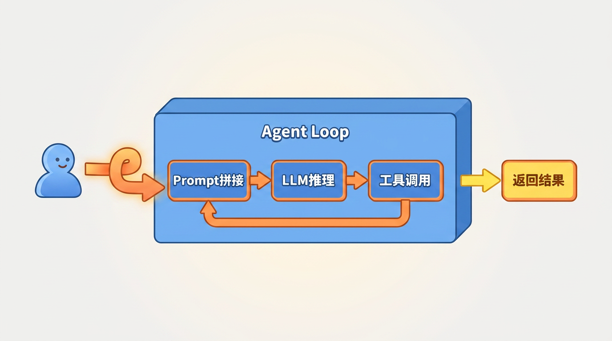
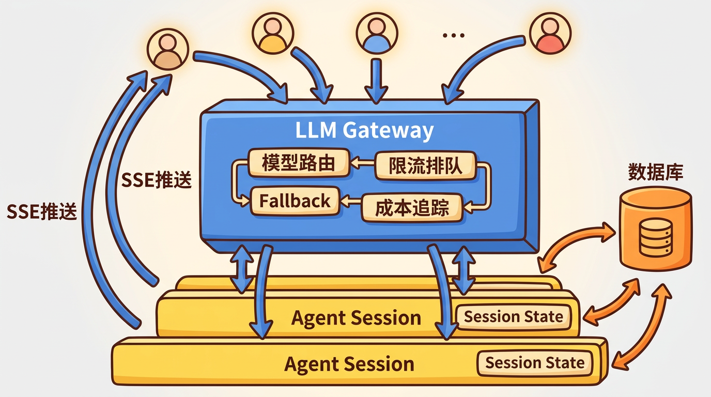
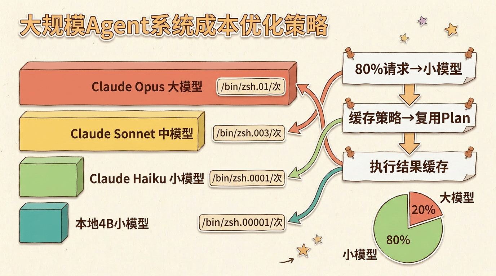
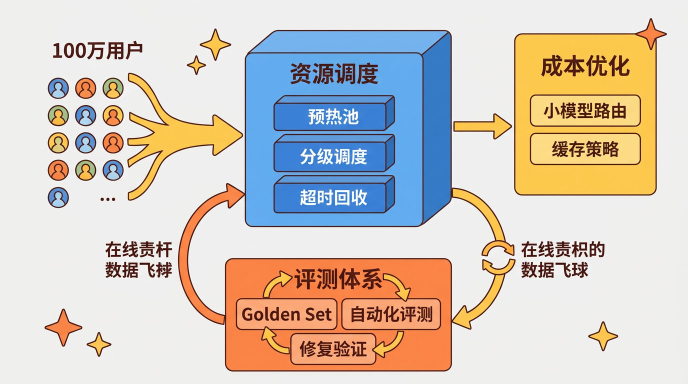
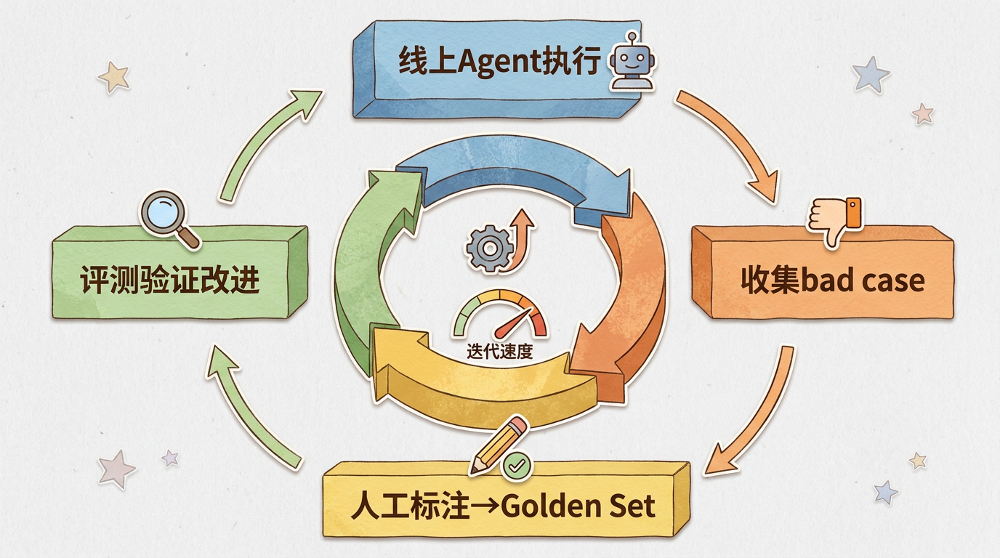

大规模Agent系统设计：从个人助手到十亿用户服务
很多人第一次搭Agent系统，觉得就是”套个LLM API + 加几个工具调用”。跑通了一个Demo，问它”今天天气怎么样”能正确调用天气API，就以为Agent系统的复杂度仅此而已。
但实际情况是：你的系统能服务1个用户、10个用户、10万个用户，架构完全不同。
这不是夸张。一个能正确调用工具的Agent，和一个能稳定服务百万用户的Agent系统，中间隔着的东西，和你写一个Hello World到构建一个淘宝的距离差不多。
第一阶段：能跑就行（1个用户）
最简单的Agent长什么样？
架构非常简单：一个while循环，根据LLM的输出决定是调用工具还是返回结果。Session存储在内存中，工具采用同步调用，未做容错处理。

这个阶段的核心任务是把Agent的”脑回路”跑通：Prompt怎么写、工具怎么描述、Plan（规划）和Execute（执行）怎么串联。不需要考虑并发、不需要考虑容错、不需要考虑成本。
什么时候该离开这个阶段？ 当你的Agent能力基本稳定，开始有真实用户想用的时候。
第二阶段：多用户服务（10-1000用户）
到这一步，第一个问题来了：Session怎么隔离？
Agent是有状态的。用户A的对话历史、工具执行进度、中间结果，不能让用户B看到。最直觉的做法是每个用户一个Session对象，存在内存Map里。这能扛到几十个用户。
但真正的挑战不是Session隔离，而是LLM调用的并发管理。
LLM Gateway
假设你的Agent每次任务平均调用30次LLM（Plan一次、Execute中每步调一次、ReAct（Reasoning+Acting，一种”边推理边行动”的Agent模式）兜底再调几次）。虽然ReAct模式下每步是串行的，100个并发用户意味着同一时刻可能有数百个LLM请求在排队或执行中。而大多数LLM API有速率限制——比如Claude的Tier 1只有50 RPM（Requests Per Minute，每分钟请求数），且还有输入/输出Token每分钟的限额。
你需要一个LLM Gateway：
| 能力 | 说明 |
|---|---|
| 模型路由 | 简单任务用小模型（如Claude Haiku），复杂任务用大模型（如Claude Sonnet） |
| 限流排队 | 超过RPM（Requests Per Minute）限制的请求排队等待 |
| Fallback | 主模型挂了切备用模型 |
| 成本追踪 | 每个Session消耗了多少Token |
异步执行
另一个关键变化：用户的请求变成异步的了。
单用户时，用户发一句话就等着，Agent跑完再回复。但Agent执行一个复杂任务可能要几分钟——让用户等几分钟是不现实的。所以：
- 用户发任务 → 立即返回”任务已接收”
- Agent在后台执行 → 通过SSE（Server-Sent Events，服务端推送事件）推送进度
- 用户可以随时断开 → 回来还能看到执行结果
这要求你的Session模型从”同步阻塞”变成”异步持久化”。Session状态要存到数据库，不能只在内存里。

关键数字
1000用户规模下的典型压力：
| 指标 | 估算值 |
|---|---|
| 并发Agent执行 | ~50（不是所有用户都同时在用） |
| LLM总调用量峰值 | ~1500/任务周期（50并发 × 30调用/任务） |
| LLM QPS（每秒查询数） | ~5-50（取决于单次任务耗时30s-5min） |
| 单次任务耗时 | 30s-5min（取决于复杂度） |
| 月LLM成本 | ~$5K-20K（取决于模型选择） |
第三阶段：规模化（万级-百万级用户）
到这个规模，问题从”怎么扛住并发”变成了”怎么控制成本和质量”。
资源调度
Agent执行需要计算资源。如果你的Agent要执行代码、操作文件、访问网络，每个Session需要一个隔离的执行环境（容器或VM）。
一个容器的冷启动要2-5秒。对用户来说，发个任务等5秒才开跑，体验很差。所以你需要：
- 预热池：提前启动一批空闲容器，来了任务直接分配
- 分级调度：简单任务用小容器，复杂任务用大容器
- 超时回收：任务完成10分钟后回收容器，不占资源
成本优化
算一笔账。假设：
- 日活用户100万
- 每用户每天平均发起2次Agent任务
- 每次任务平均调用30次LLM
- 每次LLM调用平均消耗2000 token，按中等模型（如Claude Sonnet）估算约$0.01/次
1 | 日成本 = 1,000,000 × 2 × 30 × $0.01 = $600,000/天 |
一个月1800万美元的LLM调用费。 这不是理论数字，这是真实规模下会遇到的成本问题。
降成本的方向：
- 小模型做简单事：意图分类、格式化输出这类任务，用4B小模型（千问3-4B、Llama 3.2-3B）就够了，成本是大模型的1/100
- 缓存策略：相似请求的Plan可以复用，不需要每次都让LLM重新规划
- 执行结果缓存：同样的工具调用+同样的参数，直接返回上次的结果
- 分级模型路由：80%的请求用小模型，只有20%真正复杂的才上大模型

质量保障
大规模系统最难的不是架构，是质量。Agent的行为是非确定性的——今天能完成的任务，改了个Prompt明天就可能失败。
你需要一套评测体系（这个话题值得单独写一篇，这里说核心思路）：

这条数据飞轮（即通过线上问题持续补充测试集、驱动模型改进的闭环机制）转起来之后，你的Agent质量会持续提升。如果这套机制运转不起来，质量优化就如同盲人摸象。

第四阶段：十亿级（这个阶段的核心不是技术）
到十亿用户，技术上的挑战反而变得”常规”了——分布式Session、多区域部署、异地多活，这些都是经典分布式系统问题，有成熟的解决方案。
真正的挑战变成了：
- 合规：不同国家的数据不能跨境存储（GDPR、中国的数据安全法）。Agent的Session数据、执行日志、长期记忆，都需要按区域隔离
- 成本：十亿用户的LLM调用成本是个天文数字，必须依赖自研小模型+端侧推理
- 治理：Agent能做什么、不能做什么，需要从技术层面提升到组织层面来定义
这个阶段，系统设计已经不是主要矛盾了。
一个容易被忽略的事
很多人把精力放在Agent的”脑力”上——Prompt工程、工具设计、Plan算法。但大规模Agent系统真正的差异化是基础设施：
- 评测体系：你能多快发现退化？
- 成本控制：你的利润率能不能撑住？
- 可观测性：出问题了你能不能在5分钟内定位到原因？
- 容错能力：LLM挂了、工具超时了、用户断连了，系统怎么优雅降级？
这些基础设施虽然缺乏技术亮点，但决定了系统的生命周期能维持三个月还是三年。